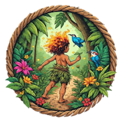

Missão
Promover a recuperação e conservação da Floresta Amazônica através do reflorestamento, educação ambiental e desenvolvimento sustentável, garantindo a proteção da biodiversidade e o bem-estar das comunidades tradicionais.

Com o Curupira como nosso aliado, trabalhamos para reflorestar a Amazônia e garantir um futuro sustentável para as próximas gerações.
Junte-se a NósA Sementes do Amanhã é uma organização não-governamental fundada em 2008 com a missão de proteger e recuperar a Floresta Amazônica. Inspirados pela lenda do Curupira, o guardião das florestas, atuamos com determinação e respeito aos saberes tradicionais.
Nossa atuação se baseia em três pilares: reflorestamento de áreas degradadas, educação ambiental e empoderamento das comunidades locais. Acreditamos que a conservação da Amazônia é essencial para o equilíbrio climático global e para a sobrevivência de milhares de espécies.
Com uma equipe multidisciplinar e o apoio de voluntários e parceiros, já recuperamos mais de 8.000 hectares de floresta e plantamos mais de 3 milhões de árvores nativas.
Promover a recuperação e conservação da Floresta Amazônica através do reflorestamento, educação ambiental e desenvolvimento sustentável, garantindo a proteção da biodiversidade e o bem-estar das comunidades tradicionais.
Ser referência na Amazônia como organização transformadora, onde o desenvolvimento econômico convive em harmonia com a preservação ambiental, inspirando uma nova geração de guardiões das florestas.